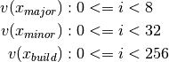
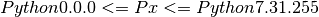

4.2. Python Syntax Versions¶
The programming language Python is under evolutionary development, thus changes it’s overall syntax frequently. The syntax is defined hereby within the context of this package as the complete programming interface, which includes the APIs of the provided standard libraries. The current major step is the phase of the final switch over from Python2 to Python3. The syntax is hereby defined by the major and minor version numbers - an optional additional third number - and provided as the main and reference implementation by the distribution CPython of the Python Foundation. Thus the versions of the CPython distribution has the version numbering of the syntax revision, see [PEP440]. The optional micro number is not available at the call interface - e.g. python2, python2.7 - and normally at least in case of the reference implementation CPython not relevant for the syntax decision.
The syntax - or better the APIs of the close to system level standard libraries changed from the release Python3.0 to Python3.4 significantly - including based on the micro number - while for Python3.5+ the APIs remain widely stable. Thus code supporting these releases, e.g. for the original Python distribution of RHEL6, may require some conditional code sections even down to the level of the micro version.
The common Python version identifier could be easily represented as a combined bitmask, see A bit of Theory - Bit Masks for Numeric Vectors.
4.2.1. A bit of Theory¶
The Python release defines pure syntax of the Python language, but also the standard library API. This comprises major cases such as the subprocess calls and multi threading, but frequently minor call details such as for the ConfigParser and the exchange of deprecated interfaces. This is in addition superposed by derivates such as IPython and MicroPython including the sub-derivative CircuitPython, but also by alternative implementations such as PyPy , IronPython, and Jython. The application has to decide whether the syntax alone, or the distribution is relevant for the adaptation of specific code segments. For the enumeration and detection of the distributions refer to the section Python Syntax and Distribution Categorization.
In case of some close-to-system libraries of the lower layer, but also on application level for example in conjunction with multiprocessing, it could become challenging to implement and deploy common code for multiple platforms such as generic cloud applications.
The pythonids package provides a 16bit value with a set of constants for conditional code segments in order to provide application focused 3-number release versions.
The specific bit masks are designed for Python releases are of fixed sizes, representing the standard values with an appropriate spare range. The overall size is designed to fit into a 16bit register. The current supported value ranges are:
This patttern requires in total 16bits, and provides the ranges:
(1)¶
which provides a range of:
(2)¶
The bitmask layout of the integer value is:


For example the version Python-3.6.5 is represented as:


or as numeric representation:
The features may in addition vary by the specific platform, which results in several system dependent libraries with a few to significant differences. The ongoing development of the version Python3 evolves with a continous change of major and minor features including dependency on the micro versions. The system platform is represented by the standard library sys as:
sys.platform # the label of current platform # e.g. 'linux2', 'win32', 'darwin'
The package pythonids provides canonical numerical values on a higher granularity for the supported system platforms. This enables in addition for code of system dependent variants controlled by simple and fast integer comparison operations. For the implementation details refer to [encode_pysyntax_to_16bit()].
The following code-example depicts an example for the combined application:
import sys if sys.version_info[0] > 2: # Python3 # prepare loop for i in range(100000): if sys.version_info[0] > 2: # Python3 if sys.version_info[1] < 5: # Python - 3.0 < 3.5 if sys.platform in ('linux2', 'darwin'): # do s. th. else: # do s.th. else. if sys.version_info[1] < 6 an sys.version_info[2] < 4: # Python - 3.5.0 < 3.5.3 # do s. th. if sys.version_info[2] < 3: # Python - 3.5.4 < 3.6.3 # do s. th. elif sys.version_info[1] > 6: # Python2.7 if sys.platform == 'linux2': # do s. th. elif sys.platform == 'darwin': # do s. th. elif sys.platform == 'win32': # do s. th. else: # do s.th. else. else: # PythonX <= Python2.6 if sys.platform == 'win32': raise Exceptio("Not supported.") # do s.th....
The same based on static bit masks of version dependency:
from pythonids import RTE, RTE_LINUX, RTE_OSX, RTE_WIN32 from pythonids import PYV35Plus, Vxyz, encode_pysyntax_to_16bit if PYV35Plus: # Python3 # prepare loop v27 = encode_pysyntax_to_16bit(2, 7) v35 = encode_pysyntax_to_16bit(3, 5) v353 = encode_pysyntax_to_16bit(3, 5, 3) v363 = encode_pysyntax_to_16bit(3, 6, 3) for i in range(100000): if PYV35Plus: # Python3 if not Vxyz & v35: # Python - 3.0 < 3.5 if RTE & RTE_POSIX: # do s. th. else: # do s.th. else. elif Vxyz & v353: # Python - 3.5.0 < 3.5.3 # do s. th. elif not Vxyz & v363: # Python - 3.5.4 < 3.6.3 # do s. th. elif Vxyz & v27: # Python2.7 if RTE & RTE_LINUX: # do s. th. elif RTE & RTE_OSX: # do s. th. elif RTE & RTE_WIN32: # do s. th. else: # do s.th. else. else: # PythonX <= Python2.6 if not RTE & RTE_WIN32: raise Exceptio("Not supported.") # do s.th....
This code could be later easily modified to Python3 support only:
and later as easy migrated to the final target of stable Python3 features only.
The following example demonstrates the application in order to handle the changes of the Python interpreter.
4.2.2. Supported Python Releases¶
The following Python interpreters and releases are used to veriy and test the code:
Python major minor distrel CPython 2 7 CPython-2.7 CPython 3 5+ CPython-3.5+ CircuitPython 3 4 CircuitPython-3.0+ Cython 2 7 Cython-0.27+ Cython 3 0+ Cython-3.0a3 IronPython 2 7 IronPython-2.7+ Jython 2 7 Jython-2.7 MicroPython 3 PyPy 2 7 PyPy-5.8+ PyPy 3 5+ iPython 2 7 IPython-5.5+ iPython 3 5+ IPython-6.3+
4.2.3. Syntax Versions API¶
See also Shortcuts.
4.2.3.2. Variables¶
The provided variables are forseen to be uused by applications in fast and efficient numerical and boolean operations.
The 3-value Python final release of the current process in accordance to PEP440. [PEP440]
PYVxyzAttributes to adjust to current major Python version to Python3 vs. Python2.
PYV35Plus # Python3.5+ - to be changed to 3.0+ PYV35Plus # Python3.5+ - the safe constant ISSTR # string and unicode unicode # Superpose for generic Python3 compatibility.
4.2.3.3. Functions¶
Corresponding values in case of the current process are provided e.g. by sys.version and sys.version_info.
4.2.4. Comparison with sys.hexversion¶
The standard library provides for the Python syntax version information also the numeric value sys.hexversion, which is similar to pythonids.PYVxyz.
The original standard library covers the core Python syntax including the standard libraries of the reference implementation CPython. It has to be considered that the API including the provided libraries may deviate for the same syntax release version on alternative implementations. This frequently requires additional checks in order to determine the actual implementation of the current Python distribution, see Python Distribution Categorization.
The numeric representation is described in the manual [CPython]. The value consumes 32bits, the encoded fields comprise some additional release information of interest for the Python interpreter developers only.
Both variants do not contain the identification of integrated language variants which is covered by the Python distribution, see Python Distribution Categorization.
The syntax of Python for final production releases is specified by the major(PY_MAJOR_VERSION) and minor(PY_MINOR_VERSION) version number, while the optional build(PY_MICRO_VERSION) number could already be ignored in most cases [FINALRELEASE]. So the PY_RELEASE_LEVEL and the PY_RELEASE_SERIAL are not meaningful relevant for production grade code, but are eventually used for internal test purposes.
The content of the sys.hexversion comprises the 3-value version identifier of the current Python release with additional production information of the Python interpreter itself.
Bits (big endian order) Meaning 1-8 PY_MAJOR_VERSION (the 2 in 2.1.0a3) 9-16 PY_MINOR_VERSION (the 1 in 2.1.0a3) 17-24 PY_MICRO_VERSION (the 0 in 2.1.0a3) 25-28 PY_RELEASE_LEVEL (0xA for alpha, 0xB for beta, 0xC for release candidate and 0xF for final) 29-32 PY_RELEASE_SERIAL (the 3 in 2.1.0a3, zero for final releases)
While the 3-value version identifier actually identifies relevant information on the syntax and library API releases, the additional values provide basically information non/transparent to the system and application developer. In addition the comparison operations require additional steps in order to eliminate the additional bits.
The pythonids.PYVxyz focusses solely on the semantics related to the Python syntax and API definition as required for systems and application development[FINALRELEASE]_. Therefore utilizes the first 3-values only. This reduces the number of operations required on comparison opreations under some circumstances significantly.
Bits Meaning 15-13 PY_MAJOR_VERSION: 0<= v <= 7 (the 3 in 3.6.4) 12-8 PY_MINOR_VERSION: 0<= v <= 31 (the 6 in 3.6.4) 7-0 PY_MICRO_VERSION: 0<= v <= 255 (the 4 in 3.6.4)
The endiannes is “visually similar” to the order of decimal integer numbers, thus virtually little-endian.
The size of sys.hexversion is 32bit while the size of pythonids.PYVxyz is 16bit. The 16bit based layout seems to be sufficient for atleast more than the next three to four decades, if the syntax evolution continues with curretn rate of change, else even longer. Thus virtually ‘endless’ in terms of IT application life cycles.
4.2.5. Resources¶
- CPython [CPython]
- CircuitPython [CircuitPython]
- Cython [Cython]
- Detect if python script is run from an ipython shell, or run from the command line [ARTICLESTACKOFLOWIPYTHON]
- In Python how can one tell if a module comes from a C extension? [ARTICLESTACKOFLOWCEXT]
- IPython [IPython]
- IronPython [IronPython]
- Jython [Jython]
- MicroPython [MicroPython]
- PEP407 - New release cycle and introducing long-term support versions [PEP407]
- PEP421 - Adding sys.implementation - [PEP421]
- PEP440 - Version Identification and Dependency Specification [PEP440]
- PEP440 [PEP440] - section final releases [FINALRELEASE]
- PyPy [PyPy]
- Software Versioning [SWVERS]